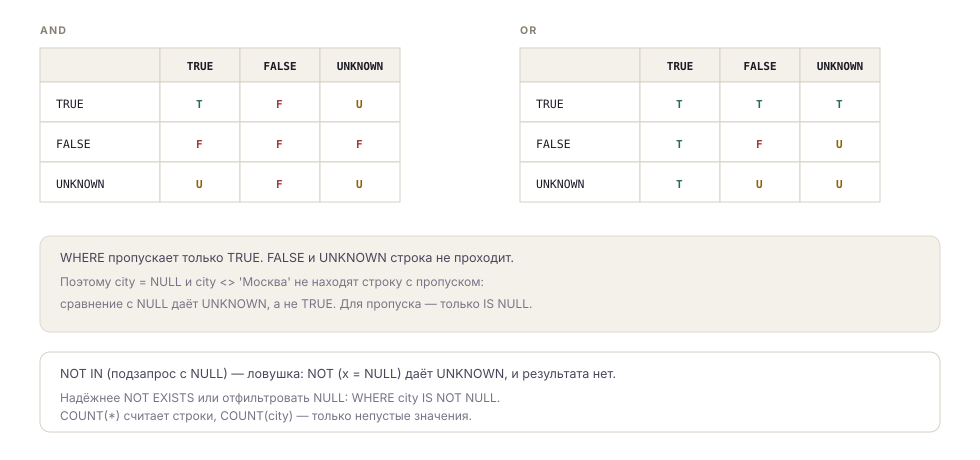

SELECT, WHERE и логика трёх значений NULL — это не значение, а отсутствие значения
WHERE кажется простым: «оставить строки, где условие истинно». Но в SQL истинности три — TRUE, FALSE и UNKNOWN, — и именно UNKNOWN объясняет, почему строка с пропуском не находится ни одним «обычным» сравнением.
Словарь главы — если забыли термины
- логика трёх значений
- TRUE, FALSE и UNKNOWN; WHERE пропускает только TRUE.
- UNKNOWN
- Результат сравнения с NULL; не TRUE и не FALSE.
- IS NULL
- Проверка отсутствия значения; сравнение
= NULLне работает. - COUNT(*)
- Число строк группы, включая строки с NULL в колонках.
- LIKE
- Поиск по шаблону (
%,_); регистр не приводит. - BETWEEN
- Диапазон включительно с обеих границ.
01Зачем это backend-разработчику
- Почти каждый запрос в backend — это SELECT с WHERE и сортировкой. Здесь формируется база для JOIN и GROUP BY.
- NULL ломает отчёты: «почему пользователь не попал в выборку», «почему NOT IN вернул пусто», «почему COUNT меньше числа строк».
- Прямой мост в pandas:
IS NULL—isna(),IN—isin(),LIKE—str.contains(). - Собеседование: «чем NULL отличается от пустой строки», «почему NULL = NULL не TRUE», «COUNT(*) или COUNT(col)».
02Ассоциация-якорь: три значения истины
У условия в SQL не два исхода, а три: TRUE, FALSE и UNKNOWN. TRUE — строка проходит; FALSE и UNKNOWN — нет.
Сравнения =, <>,
<, > с NULL дают UNKNOWN — даже
NULL = NULL.
Поэтому «найти пропуск» можно только через IS NULL: это проверка
факта отсутствия, а не сравнение значений.
03Ассоциативный ряд: восемь звеньев
- SELECTкакие колонки вернуть
- DISTINCTубрать дубли результата
- WHEREоставить строки
- AND / ORкомбинировать условия
- NULLотсутствие значения
- IS NULLпроверка пропуска
- IN / BETWEEN / LIKEсписки, диапазоны, текст
- COUNTстроки против непустых
04Схема: таблицы истинности

05Как это устроено на самом деле
NULL — не ноль и не пустая строка
NULL означает «значение неизвестно». Ноль — известное число, пустая строка — известная
строка. Поэтому NULL = 0 и NULL = '' — не TRUE,
а UNKNOWN.
Сравнения дают UNKNOWN
city = 'Москва' для строки с NULL — UNKNOWN; city <> 'Москва' —
тоже UNKNOWN. Строка не проходит ни прямое, ни обратное условие. Это не баг, а семантика.
COUNT(*) и COUNT(col)
COUNT(*) считает строки, COUNT(city) — только непустые
значения. Разница — ровно число пропусков.
06Лаборатория: запустить и увидеть
Фрагменты файла 20_select_where.sql.
База learning_shop: у Petr нет города, у Maria нет email. Этого достаточно,
чтобы увидеть все ловушки.
Шаг 1. SELECT и DISTINCT
SELECT DISTINCT city FROM users ORDER BY city;
Четыре строки — потому что NULL тоже считается отдельным значением DISTINCT. В psql его ячейка выглядит пустой (там один пробел выравнивания).
Шаг 2. Сравнение с NULL не работает
SELECT id, name FROM users WHERE city = NULL; SELECT id, name, city FROM users WHERE city IS NULL;
= NULL даёт UNKNOWN и не находит ничего. IS NULL проверяет
отсутствие значения и находит строку.
Шаг 3. Неравенство тоже не находит NULL
SELECT id, name, city FROM users WHERE city <> 'Москва';
Petr не попал: NULL <> 'Москва' — UNKNOWN. Если нужно «все, кроме Москвы,
включая неизвестных», условие пишут явно: city <> 'Москва' OR city IS NULL.
Шаг 4. Три значения на практике
SELECT NULL = NULL AS eq, NULL <> NULL AS neq,
NULL AND true AS a, NULL OR false AS o;
Все четыре выражения — UNKNOWN; psql показывает их как пустые ячейки. Это и есть третье значение.
Шаг 5. IN с NULL и NOT IN с подзапросом
SELECT id, name, city FROM users WHERE city IN ('Москва', NULL);
SELECT id, name FROM users WHERE city NOT IN (SELECT city FROM users);
IN (..., NULL) находит только Москву: совпадение с NULL не считается.
А NOT IN по подзапросу, где есть NULL, возвращает пусто — классическая ловушка.
Шаг 6. COUNT(*) против COUNT(col)
SELECT COUNT(*) AS all_rows, COUNT(city) AS known_city FROM users;
Шаг 7. BETWEEN, LIKE и сортировка с NULL
SELECT name, price FROM products WHERE price BETWEEN 1000 AND 30000 ORDER BY price; SELECT name FROM products WHERE name LIKE '%о%' ORDER BY name; SELECT name, city FROM users ORDER BY city ASC NULLS LAST;
BETWEEN включает обе границы. LIKE не приводит регистр:
'%о%' найдёт «Ноутбук», но не «Очки». NULLS LAST
явно задаёт место пропусков в сортировке.
Шаг 8. COALESCE
SELECT name, COALESCE(city, 'неизвестно') AS city_filled FROM users;
COALESCE — это SQL-аналог fillna. Как и там,
подставлять значение стоит осознанно: «неизвестно» — честнее нуля.
07Мост: та же логика в pandas
# SELECT DISTINCT city FROM users
users["city"].drop_duplicates()
# WHERE city = 'Москва'
users[users["city"] == "Москва"]
# WHERE city IN ('Москва', 'Казань')
users[users["city"].isin(["Москва", "Казань"])]
# WHERE city IS NULL
users[users["city"].isna()]
# WHERE name LIKE '%о%'
products[products["name"].str.contains("о", regex=False)]
# COUNT(*) и COUNT(city)
len(users), users["city"].count()
Разница только в том, что pandas умеет хранить пропуски разных типов (глава 17), а SQL — один NULL. Смысл «отсутствие не равно значению» одинаков.
08Шесть ошибок, на которых спотыкаются
Сравнение никогда не даёт TRUE, и запрос возвращает пусто.
IS NULL / IS NOT NULL.Возвращает пустой результат, хотя «логически» должен вернуть строки.
NOT EXISTS или WHERE city IS NOT NULL в подзапросе.Строка с NULL не проходит ни =, ни <>.
OR city IS NULL, если такие строки нужны.Числа расходятся при наличии пропусков.
LIKE '%москва%' не найдёт «Москва» в PostgreSQL.
ILIKE или LOWER(...) LIKE LOWER(...).В PostgreSQL NULL считается больше любого значения и попадает в конец при ASC.
NULLS FIRST / NULLS LAST явно.09Вопросы с собеседования
Чем NULL отличается от пустой строки и нуля?
NULL — отсутствие значения; пустая строка и ноль — известные значения. Поэтому NULL = '' и NULL = 0 не TRUE.
Почему NULL = NULL не TRUE?
Потому что сравнение с неизвестным значением даёт UNKNOWN: мы не знаем, равны ли два неизвестных.
Почему строка с NULL не попадает в «не равно»?
NULL <> 'Москва' — UNKNOWN, а WHERE пропускает только TRUE.
Почему NOT IN с NULL возвращает пусто?
NOT IN — это набор сравнений; сравнение с NULL даёт UNKNOWN, и итог не TRUE.
Чем COUNT(*) отличается от COUNT(column)?
COUNT(*) считает строки, COUNT(column) — непустые значения колонки. Разница равна числу NULL.
Как заменить NULL значением?
COALESCE(col, 'значение') или CASE WHEN col IS NULL ....
Что делает IN и чем похож на OR?
x IN (a, b, c) — то же, что x = a OR x = b OR x = c; с NULL внутри ведёт себя так же хитро.
Как отсортировать строки с NULL?
Явно: ORDER BY city NULLS LAST (или FIRST). Иначе место NULL зависит от СУБД.
10Три задачи: сначала своя попытка
01 Пользователи без города
Выведите имена и email пользователей, у которых не указан город.
Показать решение
SELECT name, email FROM users WHERE city IS NULL;
02 Все, кроме Москвы
Верните всех пользователей, кроме москвичей, включая тех, у кого город неизвестен.
Показать решение
SELECT name, city FROM users WHERE city <> 'Москва' OR city IS NULL;
Что важно. Без OR city IS NULL строка с пропуском исчезнет.
03 Диапазон и текст
Найдите товары дороже 400 и дешевле 30000, в названии которых есть буква «о». Отсортируйте по цене.
Показать решение
SELECT name, price FROM products WHERE price > 400 AND price < 30000 AND name LIKE '%о%' ORDER BY price;
Что важно. BETWEEN 400 AND 30000 включил бы границы; «Ноутбук» дороже 30000 и в результат не попадает.